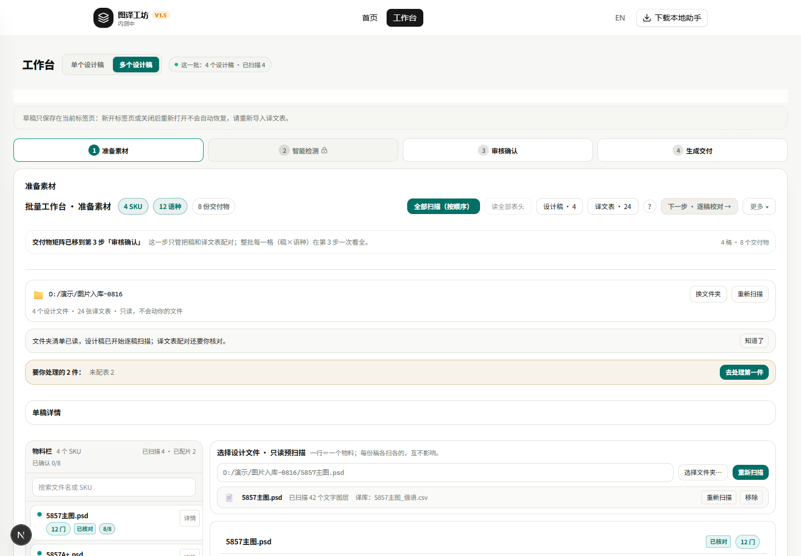
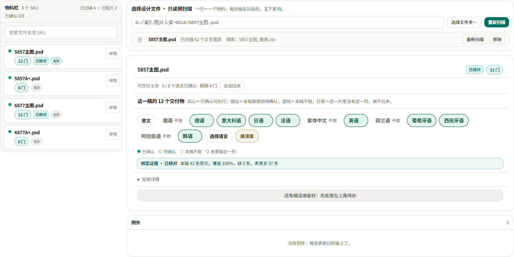

对照落地/ 批量工作台第 1 步 · 按 Owner 图 1/ 2026-10-30
上一份报告里的截图是改版前的，所以你看着像没动——这是我的错。现在第 1 步是「左边 PSD，右边这一稿的交付物」，本机真截图附在第 2 节。图 1 里还有三处不是版式而是模型与功能，按你拍的「只做显示层」没动，逐条写在第 4 节。
第 1 步的版式已经照你的图 1 做完了。两栏结构、标题三个数、文件卡片、12 个交付物胶囊、四态图例、绑定证据条都在。图 2–图 5 的版式刀也已在代码里，但演示环境没有真扫描真确认，只能出空壳——我不拿空壳截图充数。
2026-10-30 14:0x，`127.0.0.1:3000` 现跑的 dev（PID 34156，未重启），多稿态，1440 宽。


这两张跑在本地夹具上（模拟助手应答、没有真 Photoshop）。所以右栏是描边「待确认」而不是图 1 的实心绿，句末也没有「表里多 37 条」以外的夸张数——那句是夹具里表比原文多出的行，如实照出。
| 图 1 上的东西 | 现在 | 说明 |
|---|---|---|
| 标题 ＋ 三个数 | 一致 | 前两个主色浅底、第三个灰底 |
| 全部扫描（主色） | 一致 | |
| 左物料栏一行一稿 | 结构一致 | 徽章文字沿用现有口径 |
| 选择设计文件 · 只读预扫描 | 一致 | 路径行、文件卡片、图层数、译库名 |
| 这一稿的 12 个交付物 ＋ 四态说明 | 一致 | |
| 原文 ＋ 8 门 ＋ 4 门不做 | 一致 | |
| 四态图例 | 一致 | |
| 绑定证据条 | 已核对，非实证 | 实证要真扫描真确认 |
| 主表 · 组库 · 归属值 · 8 列这一行 | 演示不出现 | 归属确认后才渲染 |
| 配表提案 / 清除全部 | 未做 | 功能按钮，超出显示层 |
| 一张表带 8 语 | 做不到 | 模型是一表一语 |
group-binding.ts:152 的 table.langs?.[0]），所以今天要给一稿上 12 门就得 12 张表。改它动的是绑定模型与第 1/2/3 步的取数口、契约测试，不是显示层。要不要开这一刀，你一句话我就排。review-step.tsx:1032，逐行摊开、列裁、默认只列问题行、分页。这次只交第 1 步的真截图。图 3／图 4／图 5 那样的实况，必须真机跑一遍：装助手 → 真 PSD 扫描 → 真表读入 → 逐门确认。这步我随时能做，等你点头。
npx tsc --noEmittsc、test:wb-four-screens、test:step1-mock-contract、test:workbench-ui-contract、test:workbench-scope（53 条断言）、test:batch-workbench-guards、test:en-workbench（17 条）、i18n:guard，逐条退出码 0。日志：worktrees/develop/tmp/wb-v3-four-screens-20261030/gates-final/。
改的是 step1-stage-view.tsx 的版式与 dict-en.json 的 10 条词。
服务端、助手、计费与积分契约四层、执行与覆盖算法、env flag、首页、探针页全未改。
改动留在 develop 工作树里等你验。
真实 12 稿 × 12 语一次没跑，「批量生产全链路通过」这句话不成立。